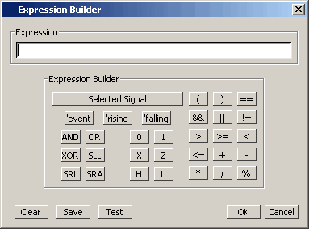
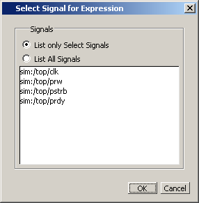

The Expression
Builder is a feature of the List Signal Search dialog box and the
List trigger properties dialog box. You can use it to create a search expression
that follows the GUI_expression_format.
Procedure
- Choose from the main menu. This displays
the Wave Signal Search dialog box.
- Select Search for Expression.
- Click
the Builder button. This displays
the Expression Builder dialog box shown in Figure 1.
Figure 1. Expression Builder Dialog Box
- You click
the buttons in the Expression Builder dialog box to create a GUI
expression. Each button generates a corresponding element of expression
syntax, and is displayed in the Expression field. (Refer to GUI_expression_format Expression Syntax in the Command Reference
Manual). In addition, you can use the Selected
Signal button to create an expression from signals you
select from the List window.
- For example,
instead of typing in a signal name, you can select signals in a
List window and then click Selected Signal in
the Expression Builder. This displays the Select Signal for Expression
dialog box shown in Figure 2.
Figure 2. Selecting Signals for
Expression Builder 
- Note that
the buttons in this dialog box allow you to determine the display
of signals you want to put into an expression:
List only Select Signals — list only
those signals that are currently selected in the parent window.
List All Signals — list all signals
currently available in the parent window.
- Once you
have selected the signals you want displayed in the Expression Builder,
click OK.